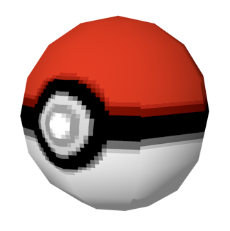
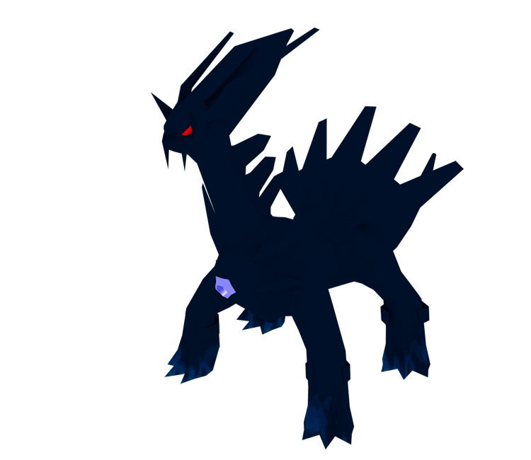
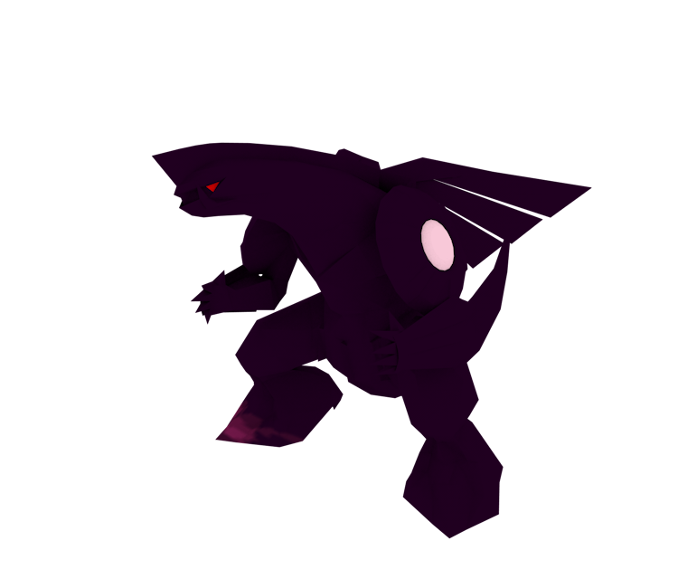
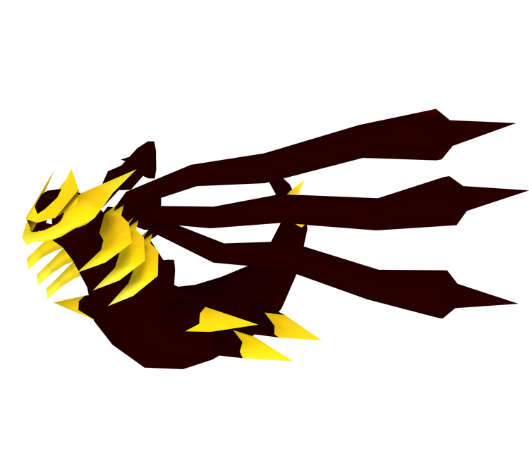

Early Pokemon 3D Models

Pokemon is a video game series developed by Game Freak and Published by Nintendo.
Pokemon Diamond and Pearl
Pokemon Diamond and Pearl released at the same time and were the first games in the series to incorperate 3D elements.
Starting in 1996 with Pokemon Red and Pokemon Blue, the series was 2D and mostly used sprites to represent characters and objects.
This was the case up until Pokemon X and Y, which released in 2013 and switched the series into full 3D.
However, some games before this point included 3D models in certain areas,
and I thought it would be interesting to make a collection of these early 3D models from the main series of Pokemon games.
While there were many spin-off games that incorporated 3D before this, I will only be focusing on the main series of games.
The games used 3D for the title screens, some animations in game, and many elements of the environment, such as buildings.
I will only be including models of characters though.
All of the models of characters are included below.
 
These are models of the pokemon Dialga and Palkia.
These appear on the boxes of the games and the models are used on the title screen.

This pokemon is Giratina. After the release of Pokemon Diamond and Pearl,
an enhanced version of the games was made, with this pokemon as the mascot.
It appears on the box and title screen of the game Pokemon Platinum and is the last 3D pokemon from these 3 games.
(Link to next page at the top of this page)